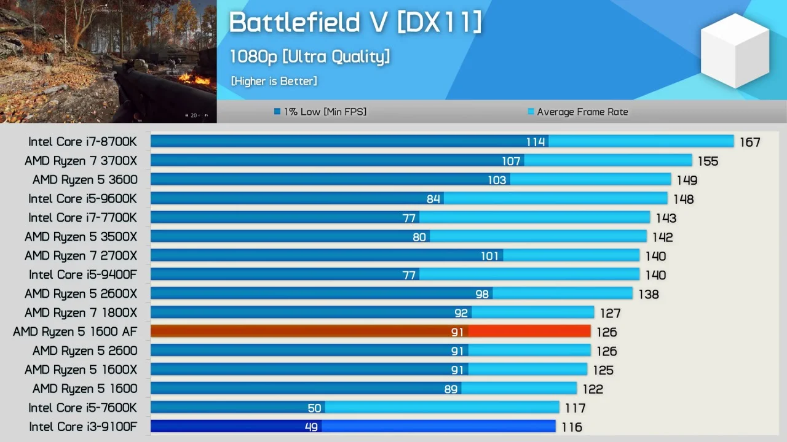

Шесть антикризисных ядер - Ryzen 5 1600AF
Сейчас мы с вами поговорим про самый выгодный к апгрейду процессор среди всех бюджетных решений - Ryzen 5 1600AF.
Почти три года назад Zen1 стал завоёвывать сердца своих покупателей. Качественный термоинтерфейс под крышкой, разблокированный множитель на всего модельного ряда и холодные температуры были усладой для компьютерных энтузиастов.
Однако, многим нетребовательным геймерам новинки тоже пришлись по вкусу. Ryzen 5 1600 в комплексном разгоне навязывал конкуренцию в игровых бенчмарках i7 7700 non-k, который стоил на порядок дороже, а так же наголову обходил четырёхядерные Core i5 по комфорту и плавности геймплея. Кстати, младший представитель Ryzen 5 отлично подвергался разгону на боксовом кулере до частоты 3700-3800 Mhz без существенного роста температур и энергопотребления.
Шло время, выходили новые линейки процессоров как синих, так и красных. Однако спрос на полюбившийся шестиядерник не спадал. Виной всему, вероятно, стала демократичная ценовая политика, благодаря которой этот двенадцатипоточник так и продолжил конкурировать с четырёхядерными моделями конкурента за кошелёк потребителя
Но теперь на прилавках магазинов можно встретить всё чаще модель с маркировкой Ryzen 5 1600AF - так что же это за зверь такой?

С точки зрения спецификаций - это промежуточная модель между Ryzen 1000 и Ryzen 2000 серии. Частотная формула этого камня осталась от Zen 1. Но если учитывать литографию, то камушек относится скорее к поколению Pinnacle Ridge, о чем красноречиво свидетельствуют скрины из CPU-Z.
Как и все двухтысячники - его легко погнать до 3900-4000 Mhz по ядрам. А потолок разгона оперативной памяти на платах с топологией Daisy Chain увеличился до внушительных 3866 Mhz.
За свои семь тысяч рублей это одно из лучших бюджетных решений на рынке на сегодняшний день.
А стали ли вы обладателем этого необычного CPU, рожденного на стыке двух поколений? Довольны ли приобретением? Имеете ли вы какой нибудь из трех процессоров, приведенных ниже?
- Ryzen 5 1600 AF
- Ryzen 5 1600
- Ryzen 5 2600
- Core i7 7700
А на этом пока всё. До скорых встреч!